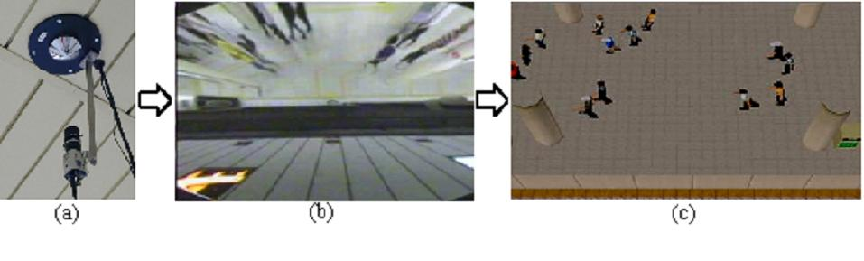

In large-scale public spaces like central railway stations, appropriate guidance for crowd control is critical because of the vast number of visitors. There are two traditional ways to realize this guidance. Staff in a control room can provide overall guidance to all visitors through announcement speakers while on-site staff working can provide location-based guidance to individual visitors. Announcement speakers are an efficient way of guiding many people remotely. However, they are not able to provide location-based and context-aware instructions. We have created a new communication approach called 'trans-space communication' to realize remote location-based and context-aware instructions for many people or just one. This approach allows the guide to oversee the whole crowded space and choose one or a few people to address. We have developed a guidance system that implements the trans-space approach. This system is a combination of mobile phones and virtual cities. Mobile phones enable individual communication, which is impossible with announcement speakers. A virtual city that synchronously simulates the real-world city provides application-specific or situation-specific views, which cannot be obtained with surveillance cameras.
To implement trans-space guidance, the system has to provide a global view of the situation and the crowd and allow the controller to indicate the people to be addressed freely. We extended our FreeWalk to include these capabilities. Figure 1 shows a controller (e.g. a station staff officer in a control room) standing in front of a large-scale touch screen to guide passengers on the subway platform by the trans-space guidance system. A lot of human figures are walking in the FreeWalk's virtual platform space displayed on the screen. These virtual humans are animated according to the context information retrieved from the passengers.

Figure 1. Evacuation Guidance System
In Figure 1, you can see that the controller is pointing at one human figure. When the touch screen detects the pointing operation, a vocal channel is established between the controller's microphone and the mobile phone of the passenger who corresponds to the human figure. Mobile phones and FreeWalk are connected by a special interface card, which can control audio connections between FreeWalk and several telephone lines. The numbers of the passengers' mobile phones must be registered beforehand by some sensing system such as RFID.
We installed the trans-space guidance system in Kyoto station. To construct the virtual Kyoto station, we took pictures of the station by digital cameras and pasted them on a simple geometric model based on the station's floor plan. This method reduced the building cost and also the workload in the calculating collisions between human figures and the station model.
We attached a vision sensor network to the station platform and connected it to FreeWalk so that FreeWalk could receive context information of the passengers. Figure 2(a) shows a CCD camera and a special reflector. The number of cameras can be reduced by expanding the field of view (FOV) of each camera but this causes minus (barrel) distortion. The reflector of our vision sensor can eliminate such distortion. The shape of the reflector yields a plane that perpendicularly intersects the optical axis of the camera. As shown in Figure 2(b), this optical arrangement makes it possible to have a large FOV without distortion. Figure 2(c) shows a screenshot of the simulated passengers synchronized with retrieved positions extracted from the image of Figure 2(b) by techniques such as background subtraction.

Figure 2. Context Information Retrieval through Vision Sensors
Publications:
Hideyuki Nakanishi, Satoshi Koizumi, Toru Ishida and Hideaki Ito. Transcendent Communication: Location-Based Guidance for Large-Scale Public Spaces. International Conference on Human Factors in Computing Systems (CHI2004), pp. 655-662, 2004.
Contact:
Hideyuki Nakanishi (nakanishi at i.kyoto-u.ac.jp) Dept. of Social Informatics, Kyoto University